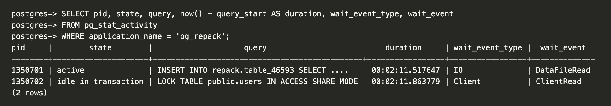
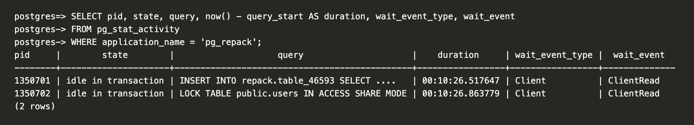
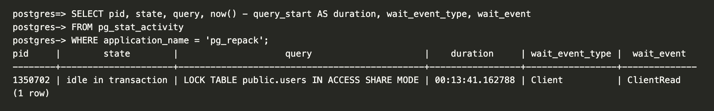

This story of a troubleshooting journey starts with me, my 40GB Postgres table, and pg_repack (let's be good and avoid VACUUM FULL).
(2 minutes after starting pg_repack) Out of curiosity, let's check what tables pg_repack has created. Based on what I know about how pg_repack works, there should be two tables: one log table and one new shadow table.
postgres=> SELECT relid, schemaname, relname
postgres-> FROM pg_catalog.pg_stat_all_tables
postgres-> WHERE schemaname = 'repack';
relid | schemaname | relname
--------+------------+-----------
774258 | repack | log_46593
(1 row)
Okay, just the log table so far. Let me look at the activity:

Nice! Seems like the process responsible for the INSERT is active.
(10 minutes later) Let's see if the second table is showing now:
postgres=> SELECT relid, schemaname, relname
postgres-> FROM pg_catalog.pg_stat_all_tables
postgres-> WHERE schemaname = 'repack';
relid | schemaname | relname
--------+------------+-----------
774258 | repack | log_46593
(1 row)
Interesting, still nothing. It can take time. As long as the INSERT process is active everything should be fine.

Oh, it's waiting on the client? Feels a bit weird that it's idle. Will it become active again..?
Let's be patient and give it a few more minutes.

Huh? Where did the other process go?!
I had run pg_repack with the --echo --elevel=DEBUG options; let me look at the output. (Ellipsis indicates truncated content)
...
DEBUG: ---- repack_one_table ----
DEBUG: target_name : public.users
...
DEBUG: ---- setup ----
...
LOG: (query) BEGIN ISOLATION LEVEL READ COMMITTED
LOG: (query) SET LOCAL lock_timeout = 100
LOG: (query) LOCK TABLE public.users IN ACCESS EXCLUSIVE MODE
LOG: (query) RESET lock_timeout
...
DEBUG: LOCK TABLE public.users IN ACCESS SHARE MODE
OG: (query) SELECT pid FROM pg_locks WHERE locktype = 'relation' AND granted = false AND relation = 46900 AND mode = 'AccessExclusiveLock' AND pid <> pg_backend_pid()
DEBUG: No competing DDL to cancel.
LOG: (query) COMMIT
DEBUG: Waiting on ACCESS SHARE lock...
DEBUG: ---- copy tuples ----
LOG: (query) BEGIN ISOLATION LEVEL SERIALIZABLE
LOG: (query) SELECT set_config('work_mem', current_setting('maintenance_work_mem'), true)
LOG: (query) SET LOCAL synchronize_seqscans = off
...
LOG: (query) INSERT INTO repack.table_46593 SELECT id,user_id,created_at,updated_at,item_type,state FROM ONLY public.users
It has stopped at the INSERT and the transaction has not been committed yet. This must be why it was in the idle in transaction state earlier.
But why did the process disappear? Did it OOM?
Nope, there is enough memory and there no OOM logs. Also cannot be lock contention. Perhaps some other resource contention? I'm not really sure. Maybe a temporary glitch of some sort? Let me kill these processes, clean up, and retry.
Same issue.
I need to do some more reading and research on pg_repack; maybe I'm misunderstanding something.
(Several hours later; 11 pm EST) Revisiting this mystery. Let's re-run everything from the start.
We're 15 minutes in and the INSERT process is still active.
(Much later; past midnight) I can see two tables now! Let's look at the pg_repack command output logs.
...
DEBUG: ---- swap ----
...
DEBUG: ---- drop ----
...
DEBUG: ---- analyze ----
Aaaaand done. Shell process exited with status code 0. Everything looks good.
Job's done. But... I want to know why it did not work in the morning when it worked now, at night. The database load is definitely much lower now so was the DB load the cause? But it's unclear to me how that would prevent the transaction from committing and cause the process to go idle in the transaction, disappearing just moments later.
What is pg_repack even doing? Let's try getting a stack trace or something.
Found sample for macOS. Running sample $(pgrep pg_repack) 1:
Sampling process 4658 for 1 second with 1 millisecond of run time between samples
Sampling completed, processing symbols...
Sample analysis of process 4658 written to file /tmp/pg_repack_2026-03-04_204523_B3D1.sample.txt
Call graph:
865 Thread_8292553 DispatchQueue_1: com.apple.main-thread (serial)
+ 865 start (in dyld) + 6076 [0x195eaeb98]
+ 865 main (in pg_repack) + 1572 [0x100d28cfc]
+ 865 repack_one_database (in pg_repack) + 5220 [0x100d2ae10]
+ 865 pgut_command (in pg_repack) + 20 [0x100d2d594]
+ 865 pgut_execute_elevel (in pg_repack) + 408 [0x100d2db9c]
+ 865 PQexecFinish (in libpq.5.15.dylib) + 44 [0x100dab320]
+ 865 PQgetResult (in libpq.5.15.dylib) + 100 [0x100daae1c]
+ 865 pqWaitTimed (in libpq.5.15.dylib) + 32 [0x100daf0e8]
+ 865 pqSocketCheck (in libpq.5.15.dylib) + 312 [0x100daf26c]
+ 865 poll (in libsystem_kernel.dylib) + 8 [0x196216498]
865 Thread_8292560
865 start_wqthread (in libsystem_pthread.dylib) + 8 [0x19624ab74]
865 _pthread_wqthread (in libsystem_pthread.dylib) + 368 [0x19624be6c]
865 __workq_kernreturn (in libsystem_kernel.dylib) + 8 [0x19620f8b0]
Hmm nothing really stands out but seeing poll... could this be a networking issue? Perhaps due to the long-running transaction? But what kind of networking issue? How could it be that it worked at nighttime but not at daytime?
Let's see what we can find.
postgres=> SHOW listen_addresses;
listen_addresses
------------------
*
(1 row)
postgres=> SHOW statement_timeout;
statement_timeout
-------------------
0
(1 row)
postgres=> SHOW idle_in_transaction_session_timeout;
idle_in_transaction_session_timeout
-------------------------------------
0
(1 row)
postgres=> SHOW lock_timeout;
lock_timeout
--------------
0
(1 row)
That looks fine.
After some more searching, I find this nice reference guide. Let's look at some TCP-related parameters.
postgres=> SHOW tcp_keepalives_idle;
tcp_keepalives_idle
---------------------
7200
(1 row)
postgres=> SHOW tcp_keepalives_interval;
tcp_keepalives_interval
-------------------------
75
(1 row)
postgres=> SHOW tcp_keepalives_count;
tcp_keepalives_count
----------------------
9
(1 row)
Alright. So those are server-side but what about client-side?
The client-side keep-alive parameters can be set to whatever values you want.
So when these are not specified, they're 0. And according to the libpq documentation, when the values are 0, libpq uses the system default. So that means my macOS settings.
Let me check sysctl net.inet.tcp:
net.inet.tcp.keepidle: 7200000
net.inet.tcp.keepintvl: 75000
net.inet.tcp.keepcnt: 8
keepalives_idle is 2 hours, keepalives_interval is 75 seconds, and keepalive_count is 8. This means pg_repack on my laptop will only send a keepalive probe after 2 hours.
Let's dig more and find what we can about TCP, keepalive, and these configurations.
Found a very nice post (TCP keepalive overview).
The other useful goal of keepalive is to prevent inactivity from disconnecting the channel. It's a very common issue, when you are behind a NAT proxy or a firewall, to be disconnected without a reason. This behavior is caused by the connection tracking procedures implemented in proxies and firewalls, which keep track of all connections that pass through them. Because of the physical limits of these machines, they can only keep a finite number of connections in their memory. The most common and logical policy is to keep newest connections and to discard old and inactive connections first.
This sounds like it!
Some more Googling and I learn of the term middleboxes. I also find this HackerNews comment that mentions "Exhausted NAT state tables is excessively common" and some papers talking about improving reliability in middleboxes. I think we're getting somewhere now.
From the TCP keepalive overview post:
Because the normal implementation puts the connection at the top of the list when one of its packets arrives and selects the last connection in the queue when it needs to eliminate an entry, periodically sending packets over the network is a good way to always be in a polar position with a minor risk of deletion.
_____ _____ _____
| | | | | |
| A | | NAT | | B |
|_____| |_____| |_____|
^ ^ ^
|--->--->--->---|----------- SYN ------------->--->--->---|
|---<---<---<---|--------- SYN/ACK -----------<---<---<---|
|--->--->--->---|----------- ACK ------------->--->--->---|
| | |
| | <--- connection deleted from table |
| | |
|--->- PSH ->---| <--- invalid connection |
| | |
Let's explicitly set the values for the client-side keepalive parameters and make sure the keepalive probes are being sent more quickly.
(Next day; 10 am) Let's append ?keepalives_idle=30&keepalives_interval=10&keepalives_count=3 to the DB connection URI and try again.
(10 minutes later) The INSERT process is still active.
(20 minutes later) The INSERT process is still active?
(30 minutes later) The INSERT process is still active!
(Some time later) It worked!!
So it was indeed a networking thing; specifically, related to idle connections.
Let's step back for a second, skim the source code for a bit, and quickly summarize what pg_repack is doing:
- Single process; creates two connections to the Postgres server via libpq.
- One connection (called
connectionin the source) is to handle the copying, rebuilding indexes, etc. Another connection (callconn2in the source) is to hold anACCESS SHAREtable lock to prevent any DDL commands from modifying the table while repacking is in progress. conn2only COMMITs after all the work inconnectionis done. There's minimal communication betweenconn2and the pg_repack client, butconnectionwill need to communicate more often.
Now, back to the question of why it works at night but not during the day: I think I finally see what's most likely happening. My database is close to me, in us-east-1. Because there is more network activity during a 10 am workday than 11 pm / 12 am, middleboxes (NATs, proxies, etc.) were evicting the entry quicker while the connection sat idle for long (more prone to happening when dealing with larger tables and less so with smaller ones). This causes both ends of the connection (pg_repack client on my laptop and the INSERT process on the server) to be effectively dead, but they don't know of it till one tries sending a message to the other.
Postgres on the server is sending data back but it's not reaching the client. After a little while, and after packet retransmissions, the server declares the peer dead and kills the process. The other connection (LOCK TABLE), just sits idle with neither peer sending packets to each other, so that process still remains.
This is probably why lowering keepalives_idle helps.
After all this, I found another good post (TCP keepalive for a better PostgreSQL experience), which introduced me to client_connection_check_interval.
I also ran pg_repack again, this time with tcpdump, and captured the dump in a pcap file. For next steps, I might use Wireshark and look at the tcpdump (also a good opportunity for me to learn how to use Wireshark!).
I'd love to get your feedback and comments. You can reach out to me on X or at arashnawy[at]gmail.com.